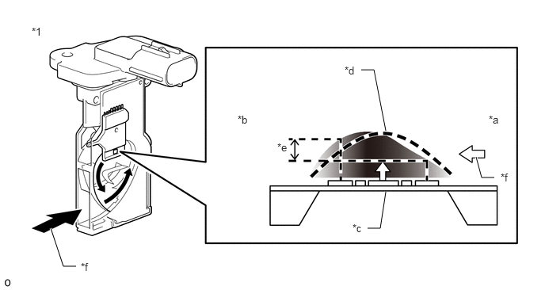
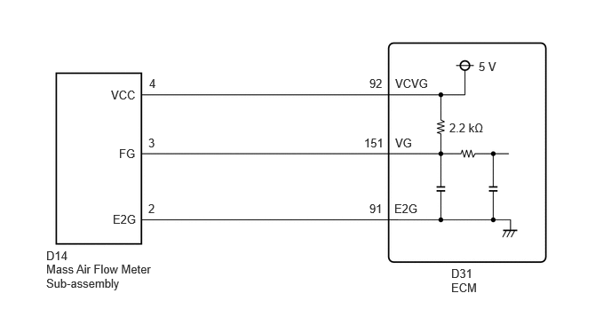

| Last Modified: 10-07-2025 | 6.11:8.1.0 | Doc ID: RM100000002GMRH |
| Model Year Start: 2024 | Model: Tacoma | Prod Date Range: [12/2023 - ] |
| Title: T24A-FTS (ENGINE CONTROL): SFI SYSTEM (for Gasoline Model): P010012,P010014; Mass or Volume Air Flow Sensor "A" Circuit Short to Battery; 2024 - 2026 MY Tacoma [12/2023 - ] | ||
|
DTC |
P010012 |
Mass or Volume Air Flow Sensor "A" Circuit Short to Battery |
|
DTC |
P010014 |
Mass or Volume Air Flow Sensor "A" Circuit Short to Ground or Open |
DESCRIPTION
The mass air flow meter sub-assembly is a sensor that measures the intake air volume using the following built-in components:
- By-pass duct (allows some of the intake air to flow past a silicon chip sensor)
- Silicon chip sensor (uses a heater control bridge circuit and temperature sensor bridge circuit to detect the difference in the temperature of the intake air that passes the sensors positioned before and after the heater)
- Control circuit (converts the difference in temperature into a pulse signal and performs correction)
Intake air flows past the temperature sensor (before heater), the heater, and then the temperature sensor (after heater) of the silicon chip sensor in the by-pass duct. As the intake air is warmed up when it is exposed to the heater, the temperature of the intake air as it flows past the temperature sensor (after heater) is higher than when it flows past the temperature sensor (before heater). The difference in temperature of the intake air at each temperature sensor varies depending on the velocity of the intake air that flows past the silicon chip sensor. The temperature sensor bridge circuit detects the difference in temperature and the control circuit converts it into a pulse signal and outputs it to the ECM. When the temperature detected by the temperature sensor (before heater) is higher than that detected by the temperature sensor (after heater), backflow of the intake air is detected.
The ECM calculates the intake air volume based on the pulse signal received from the mass air flow meter sub-assembly, and uses it to determine the fuel injection duration necessary for an optimal air-fuel ratio.
The heater control bridge circuit has a temperature sensor and power transistor, and maintains the temperature differential between the heater temperature and intake air temperature at a specific level.
|
*1 |
Mass Air Flow Meter Sub-assembly |
- |
- |
|
*a |
Upstream Side |
*b |
Downstream Side |
|
*c |
Heater |
*d |
Temperature Distribution Without Airflow |
|
*e |
Flow Rate Detection by Temperature Differential |
*f |
Intake Air |
HINT:
When DTCs are stored, the ECM enters fail-safe mode. During fail-safe mode, the ECM calculates the fuel injection duration based on the engine speed and throttle valve angle. Fail-safe mode continues until a pass condition is detected.
|
DTC No. |
Detection Item |
DTC Detection Condition |
Trouble Area |
MIL |
DTC Output from |
Priority |
Note |
|---|---|---|---|---|---|---|---|
|
P010012 |
Mass or Volume Air Flow Sensor "A" Circuit Short to Battery |
The mass air flow meter sub-assembly output frequency is higher than 9.8 kHz for 3 seconds or more (2 trip detection logic). |
|
Comes on |
Engine |
A |
|
|
P010014 |
Mass or Volume Air Flow Sensor "A" Circuit Short to Ground or Open |
The mass air flow meter sub-assembly output frequency is less than 0.1 kHz for 3 seconds or more (2 trip detection logic). |
|
Comes on |
Engine |
A |
|
MONITOR DESCRIPTION
If there is a defect or an open or short circuit in the mass air flow meter sub-assembly, the frequency level deviates from the normal operating range. The ECM interprets this deviation as a malfunction in the mass air flow meter sub-assembly circuit and stores a DTC.
Example:
When the sensor output frequency remains less than 0.1 kHz, or higher than 9.8 kHz for 3 seconds, the ECM stores a DTC.
MONITOR STRATEGY
|
Related DTCs |
P0102: Mass air flow meter range check (low frequency) P0103: Mass air flow meter range check (high frequency) |
|
Required Sensors/Components (Main) |
Mass air flow meter sub-assembly |
|
Required Sensors/Components (Related) |
- |
|
Frequency of Operation |
Continuous |
|
Duration |
3 seconds |
|
MIL Operation |
2 driving cycles |
|
Sequence of Operation |
None |
TYPICAL ENABLING CONDITIONS
|
Monitor runs whenever the following DTCs are not stored |
None |
|
All of the following conditions are met |
- |
|
Battery voltage |
8 V or higher |
|
Ignition switch |
ON |
|
Starter |
Off |
TYPICAL MALFUNCTION THRESHOLDS
P0102
|
Mass air flow meter output frequency |
Less than 0.1 kHz |
P0103
|
Mass air flow meter output frequency |
Higher than 9.8 kHz |
CONFIRMATION DRIVING PATTERN
HINT:
- After repair has been completed, clear the DTC
and then check that the vehicle has returned to
normal by performing the following All Readiness
check procedure.
Click here
![2024 - 2026 MY Tacoma [12/2023 - ]; T24A-FTS (ENGINE CONTROL): SFI SYSTEM (for Gasoline Model): DIAGNOSIS SYSTEM](../../../../stylegraphics/info.gif)
- When clearing the permanent DTCs, refer to the
"CLEAR PERMANENT DTC" procedure.
Click here
- Clear the DTCs (even if no DTCs are stored, perform the clear DTC procedure).
- Turn the ignition switch off and wait for at least 30 seconds.
- Turn the ignition switch to ON.
- Wait 5 seconds or more [A].
- Enter the following menus: Powertrain / Engine / Trouble Codes [B].
- Read the pending DTCs.
HINT:
- If a pending DTC is output, the system is malfunctioning.
- If a pending DTC is not output, perform the following procedure.
- Enter the following menus: Powertrain / Engine / Utility / All Readiness.
- Input the DTC: P010012 or P010014.
- Check the DTC judgment result.
HINT:
- If the judgment result is NORMAL, the system is normal.
- If the judgment result is ABNORMAL, the system has a malfunction.
- If the judgment result is INCOMPLETE, perform steps [A] through [B] again.
- [A] to [B]: Normal judgment procedure.
The normal judgment procedure is used to complete DTC judgment and also used when clearing permanent DTCs.
- When clearing the permanent DTCs, do not disconnect the cable from the battery terminal or attempt to clear the DTCs during this procedure, as doing so will clear the universal trip and normal judgment histories.
WIRING DIAGRAM
PROCEDURE
PROCEDURE
|
1. |
CHECK HARNESS AND CONNECTOR |
HINT:
Make sure that the connector is properly connected. If it is not, securely connect it and check for DTCs again.
Pre-procedure1
(a) Disconnect the mass air flow meter sub-assembly connector.
(b) Turn the ignition switch to ON.
Procedure1
(c) Measure the voltage according to the value(s) in the table below.
Standard Voltage:

Click Location & Routing(D14)
Click Connector(D14)
|
Tester Connection |
Condition |
Specified Condition |
Result |
|---|---|---|---|
|
D14-4 (VCC) - D14-2 (E2G) |
Ignition switch ON |
4.8 to 5.2 V |
V |
|
D14-3 (FG) - D14-2 (E2G) |
Ignition switch ON |
4.8 to 5.2 V |
V |
(d) Turn the ignition switch off and wait for at least 30 seconds.
(e) Measure the resistance according to the value(s) in the table below.
Standard Resistance:
Click Location & Routing(D14)
Click Connector(D14)
|
Tester Connection |
Condition |
Specified Condition |
Result |
|---|---|---|---|
|
D14-4 (VCC) - D14-3 (FG) |
Ignition switch off |
2.09 to 2.31 kΩ |
kΩ |
|
D14-2 (E2G) - Body ground |
Always |
Below 1 Ω |
Ω |
Post-procedure1
(f) None.
| OK |  |
INSPECT MASS AIR FLOW METER SUB-ASSEMBLY Click here
|
| NG | |
|
2. |
CHECK HARNESS AND CONNECTOR (MASS AIR FLOW METER SUB-ASSEMBLY - ECM) |
Pre-procedure1
(a) Disconnect the mass air flow meter sub-assembly connector.
(b) Disconnect the ECM connector.
Procedure1
(c) Measure the resistance according to the value(s) in the table below.
Standard Resistance:
Click Location & Routing(D14,D31)
Click Connector(D14)
Click Connector(D31)
|
Tester Connection |
Condition |
Specified Condition |
Result |
|---|---|---|---|
|
D14-4 (VCC) - D31-92 (VCVG) |
Always |
Below 1 Ω |
Ω |
|
D14-3 (FG) - D31-151 (VG) |
Always |
Below 1 Ω |
Ω |
|
D14-2 (E2G) - D31-91 (E2G) |
Always |
Below 1 Ω |
Ω |
|
D14-4 (VCC) or D31-92 (VCVG) - Body ground and other terminals |
Always |
10 kΩ or higher |
kΩ |
|
D14-3 (FG) or D31-151 (VG) - Body ground and other terminals |
Always |
10 kΩ or higher |
kΩ |
|
D14-2 (E2G) or D31-91 (E2G) - Body ground and other terminals |
Always |
10 kΩ or higher |
kΩ |
Post-procedure1
(d) None.
| OK | |
REPLACE ECM Click here
|
| NG | |
REPAIR OR REPLACE HARNESS OR CONNECTOR |